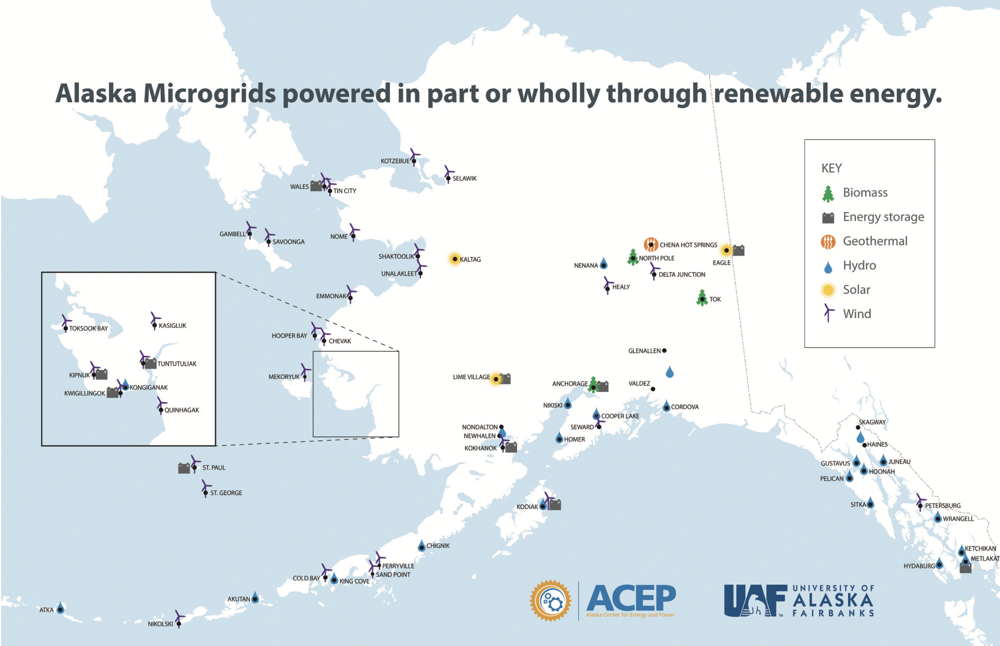

Grid Energy
Across the United States and around the world, microgrids play a crucial component in the reliability and efficiency of energy generation in both urban and rural communities. In addition, they can be used as an innovative asset to both modernize antiquated energy grids and help transition to renewable sources of energy.
When beginning to understand the physics behind energy grids, consider the Law of conservation of energy: “Energy is neither created nor destroyed, it can only be transformed from one form to another or transferred from one system to another.” In other words, from the lightbulb in your lamp to the fundamentals of power grids, both situations follow the conservation of energy where the total amount of energy in an isolated system is constant.
Source: Siemens (https://www.siemens.com/global/en.html)
According to an article from the Department of Energy, microgrids are “…a local energy grid with control capability, which means it can disconnect from the traditional grid and operate autonomously.” While one selling point stems from emergency backups, microgrids can also allow for independence from macrogrids, reliability against large scale failures, and various cost-saving measures.
In a 2015 report from the Alaska Center for Energy and Power, one challenge of building microgrids in Alaska is that they “typically cannot be connected to the greater transmission grid because of their geographical remoteness and...are not designed with that operational capability.” This added benefit is compounded for those living on islands or in rural communities in hopes to reach local power generation with extra redundancy. While generators, circuit breakers, overhead transmission lines, and transformers all make up the physics fundamentals of a traditional energy grid, the thoughtful organization, placement, and safety considerations ultimately determine its reliability.
Source: UAF/ACEP (https://acep.uaf.edu/media/158027/Microgrids-6-26-15.pdf)